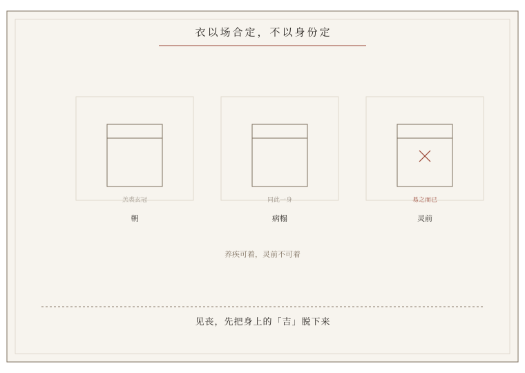

檀弓上 · 三·八十七 · 第 290 课
夫子曰：「始死，羔裘、玄冠者，易之而已。」羔裘、玄冠，夫子不以弔。
说什么事：夫子说：人刚死，还穿着羔裘玄冠（朝服）的，就换下来罢了。而羔裘玄冠这两样，夫子从不穿着去吊丧。
落在哪一层：丧服与吊服之节。论「衣以场合定，不以身份定」。
为何编在此位：上节论无相，此节论易服。一论办事之人，一论所着之衣，皆丧礼之先后。
【经】夫子曰：「始死，羔裘、玄冠者，易之而已。」羔裘、玄冠，夫子不以弔。
【注】羔裘、玄冠，夫子不以弔。不以吉服弔喪。
【疏】此一节论始死易服、小敛后不得吉服吊之事。但养疾者朝服，羔裘、玄冠即朝服也；始死则易去朝服，著深衣，故云「易之而已」。记时有不易者，又有小敛后羔裘吊者，记人引《论语·乡党》孔子身自行事之礼，以讥当时之事，故曰「羔裘玄冠，夫子不以吊」。时多失礼，唯孔子独能行之，故言之也。
始死 人刚死之时。
羔裘 羔羊皮的裘，诸侯、大夫之朝服。注「羔裘、玄冠即朝服也」。
玄冠 黑色的冠，与羔裘相配的朝冠。
易之 换下它。易，改易。
而已 罢了。二字示其简：不必大改，换下便是。
不以吊 不穿着去吊丧。
夫子说：「人刚死的时候，还穿着羔裘玄冠的，换下来就是了。」羔裘玄冠，夫子从不穿着它去吊丧。
此节两句，一句是原则，一句是实例，中间有一条线：场合。
第一句讲「始死易服」：人在病中可着朝服（疏「养疾者朝服，羔裘、玄冠即朝服也」），但人一死，就得把这身吉服换下来，改著深衣。「易之而已」的「而已」，是说不必大动，换了就对了。
第二句讲「吊丧不著吉服」：羔裘玄冠是朝服，是吉服；吊丧是凶事，不能穿吉服去。疏说这一句是记礼者引孔子自身的行事以讥当时——当时人多不换服，小敛之后还穿着羔裘去吊人。
两句话合起来是一条判准：衣服不是标身份，是标场合。
第一层 「易之而已」的分寸 此语最见礼的省力处：人死，不必换整套丧服，先把那身朝服脱下来，改穿深衣就够了。礼在最初的一刻只要求一步，不要求全套。这是体谅：刚死之时，家人正乱，能做的只有一件事——把吉服脱了。
第二层 两句话的分工 第一句是对死者家中说的：把死者的朝服换下。第二句是对来吊者说的：不穿朝服去别人家。一条向内，一条向外，同守一个「场合」。
第三层 朝服的两种场合 朝服在朝廷上是对的，在病榻前也对（养疾者朝服），在灵前就错。同一件衣服，三个场合，三样判断。礼的精细，不在衣服本身，在对场合的分辨。
第四层 「唯孔子独能行之」的冷 疏末一句带着时代的凉意：当时多失礼，只有孔子一个人能做到。这一句不是说孔子特别，是说礼在末世常常只剩少数人在守。277 曾子说「礼为可传可继」，此处的回答是：能继的人不多。
与今日何干 今人着装有场合感，却常常错在最要紧的场合：穿一身好衣服去告别，或穿着运动服去吊唁。此节的具体规定（羔裘玄冠）已不适用，但那条判准没过时：见丧，先把身上的「吉」脱掉。
| 左 | 右 |
|---|---|
| 养疾者朝服 | 病榻前可著 |
| 始死易之 | 灵前不可著 |
| 易之而已 | 只换，不必全备 |
| 羔裘玄冠 | 朝服即吉服 |
| 夫子不以吊 | 吊丧不著吉服 |
| 唯孔子独能行之 | 末世守礼者少 |
| 衣以场合定 | 不以身份定 |
| 见丧先脱吉 | 此判准至今未变 |
画一间屋内，视点平。案上并排放着两套衣服：一套是羔裘配玄冠（毛面朝上、冠形端整，摆在案的左侧），一套是素色深衣（叠好，摆在案的右侧）。两套之间隔着一小段空案面。一位老者（深衣、正面、双手正取右侧那套素衣）立在案前；其身后墙上挂着一顶玄冠（帽架空着，冠已取下）。不写文字、不画人面细节。赭色只用在左侧羔裘的毛边，与身后空帽架的横杆。
